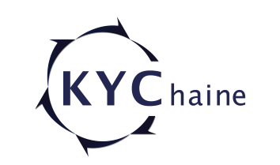
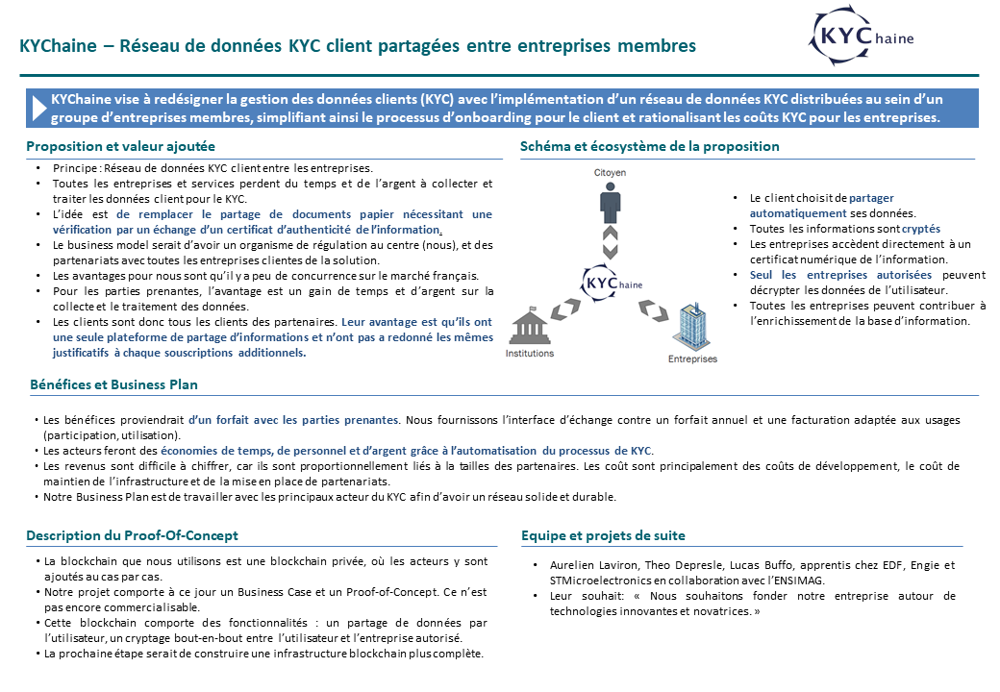
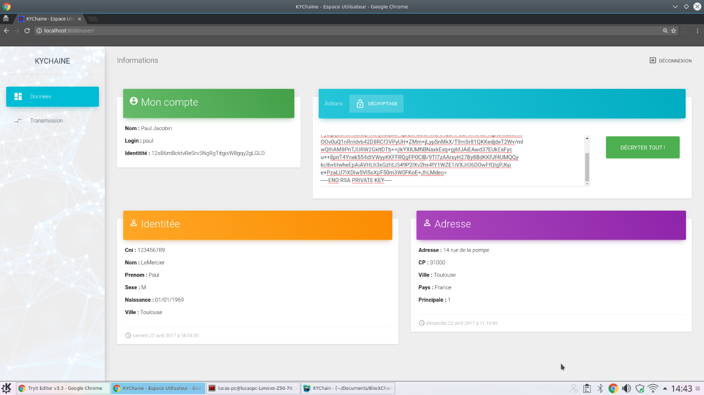

KYChaine - Projet Blockchain
J'ai réalisé ce projet Blockchain avec 2 camarades de classe, sur notre temps personnel. Nous avons vu un concours organisé par HSBC, BNP Paribas et Sia Partners sur le sujet de la blockchain. Le but étant d'avoir une idée innovante, construire un Business Case viable, et ensuite le mettre en place, via un Proof of Concept, pour valider l'utilité et la faisabilité du projet.
Nous sommes donc après concertation, partis sur un projet de KYC. En banque et dans toutes les institutions, il y a une mécanique de KYC (Know Your Customer). Le principe est donc de demander au client des documents officiels, et de vérifier leur authenticité (carte identité, justificatif de domicile, feuilles d'imposition, etc). Le problème est que c'est un processus long, de récolte, vérification et stockage. Aussi, aux yeux de la loi, les entreprises doivent avoir une version à jour du document. Mais qui s'est déjà fait contacter par une entreprise leur demandant une photocopie de leur nouvelle carte d'identité après expiration de l'ancienne ?
Le principe était donc une blockchain partagée entre les entreprises, où les utilisateurs pouvaient poser des documents et donner droit à une ou plusieurs entreprises de voir un ou plusieurs documents. C'est donc une plateforme commune, où si l'utilisateur met à jour un document, ça l'est pour tout le monde. Aussi, une entreprise vérifie l'authenticité d'un document, peut le notifier afin que l'effort soit moindre pour les entreprises suivante. Une certaine forme de collaboration entre entreprises, afin de réduire les coûts globaux.
L'avantage d'une blockchain est que tout est infalsifiable, et inscrit à vie, ce qui est très important lors de la gestion de documents d'identité. Un autre avantage est que tout est crypté, et théoriquement impossible à pirater.
Pour plus d'informations : Business Case, Démarche Projet
 